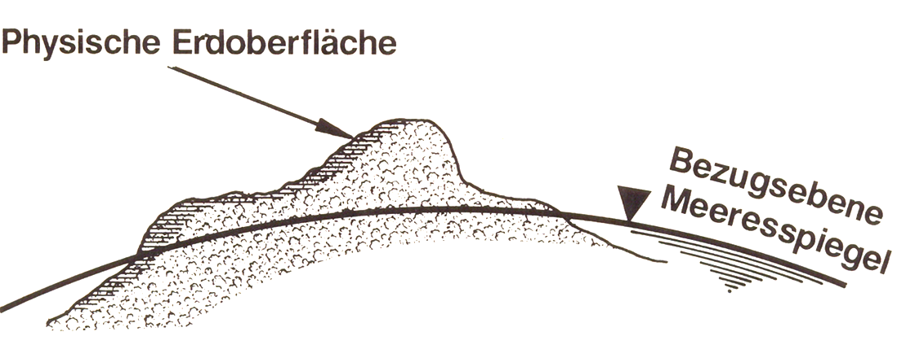

Allgemein
Die Höhenmessung ist ein sehr relevantes Teilgebiet der Geodäsie und zum Teil auch der Geografie. In der Ingenieurs- und Landesvermessung werden höhen zu bestimmten Zwecken genutzt und auch bestimmt. Dazu benötigt man eine Bezugsfläche, bei der die bezugsebene, also im allgemeinen der Meeresspiegel mit inbegriffen ist. Diesen stellt man sich mittels kommunizierender Röhren unter den Kontinenten vor. In der folgenden Darstellung ist die Bezugsebene, der Meeresspiegel und die Physische Erdoberfläche Grafisch dargestellt.
Quelle: Firmenpräsentation
Eine wichtige Rolle spielt dabei das Geoid als Bezugsfläche im Schwerefeld der Erde zur Vermessung und Beschreibung der Erdfigur. In Bereichen, in denen die Schwerkraft die Messergebnisse beeinflusst, zum Beispiel beim Nivellement wird eine eigene physikalische Erdgestallt geschaffen, also somit das Geoid. Es handelt sich dabei um die Fläche, die überall auf der Lotrichtung senkrecht steht. Man kann sie sich vereinfacht als unter den Kontinenten fortgesetzte ruhende Meeresoberfläche vorstellen. Die heutzutage genutzte Bezugsfläche ist das Quasi-Geoid, welches aus Messverfahren mittels Sattelten stammt. Der Bezug zu den Normalhöhen liegt dabei fest. Der Nullpunkt der Normalhöhen ist der Amsterdamer Pegel.